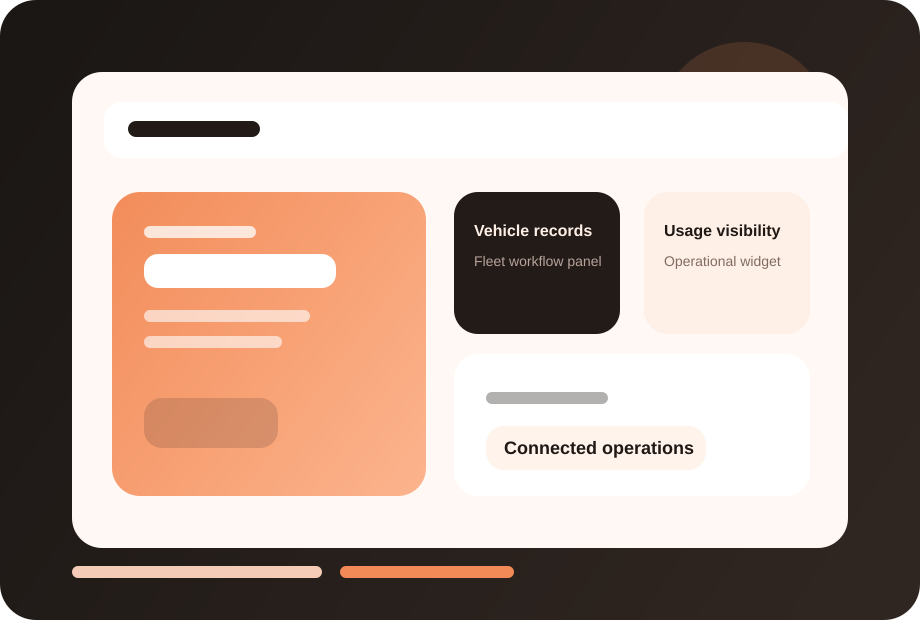
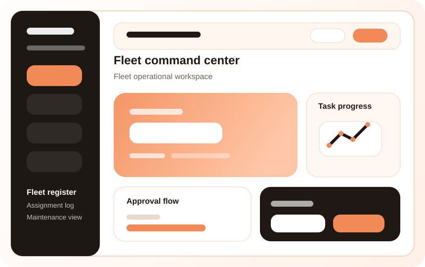
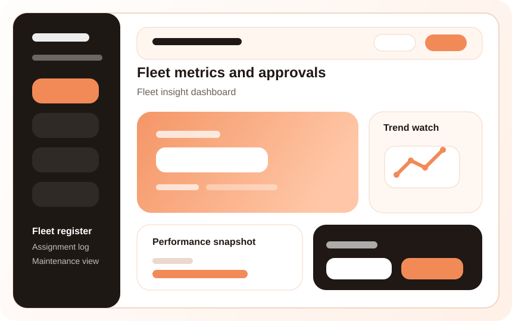

Faster execution
Shorten turnaround time with clearer workflows, cleaner ownership and fewer manual follow-ups around Fleet Management.
FuzionHR Fleet Management helps organizations track vehicles, assignments, supporting records and maintenance visibility as part of broader workforce operations.

FuzionHR Fleet Management helps teams move from manual coordination to a disciplined operating flow with stronger accountability, easier tracking and better decision support.
Create a dependable operating layer instead of disconnected follow-ups.
Maintain cleaner records, approvals and supporting documentation.
Give HR and leadership better visibility into what needs attention.
Shorten turnaround time with clearer workflows, cleaner ownership and fewer manual follow-ups around Fleet Management.
Give HR, managers and leadership a clearer view of pending actions, approvals and business risk related to Fleet Management.
Standardize the process before your organization becomes harder to manage across teams, branches and reporting layers.
These tailored mockup screens create a much stronger product story today and can later be replaced one-for-one with actual FuzionHR screenshots.

Showcase the core day-to-day view that HR teams, managers or employees use most often.

Use this section for dashboards, reporting snapshots, approvals or audit-ready summaries.